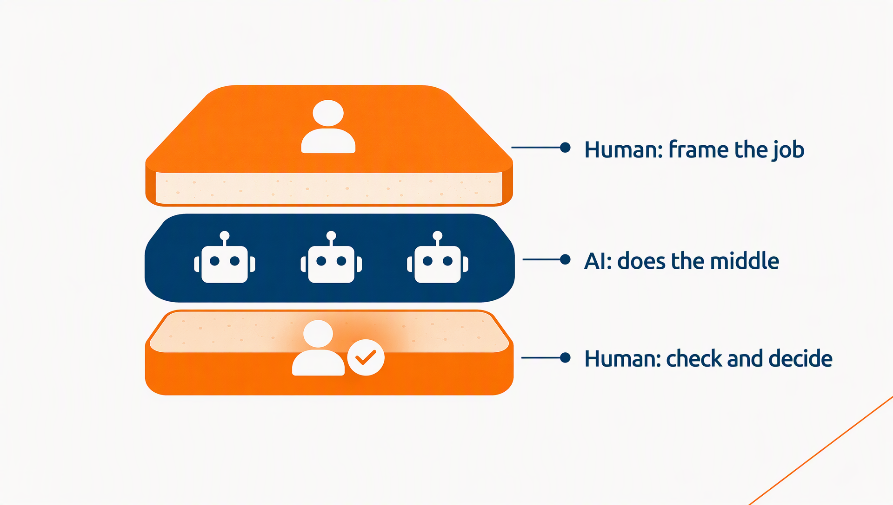
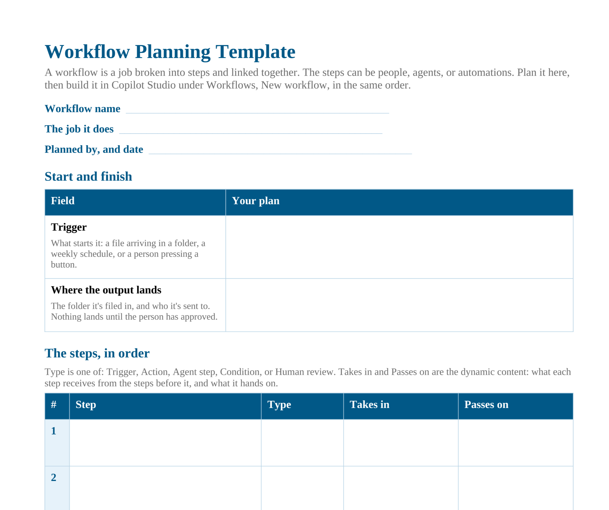
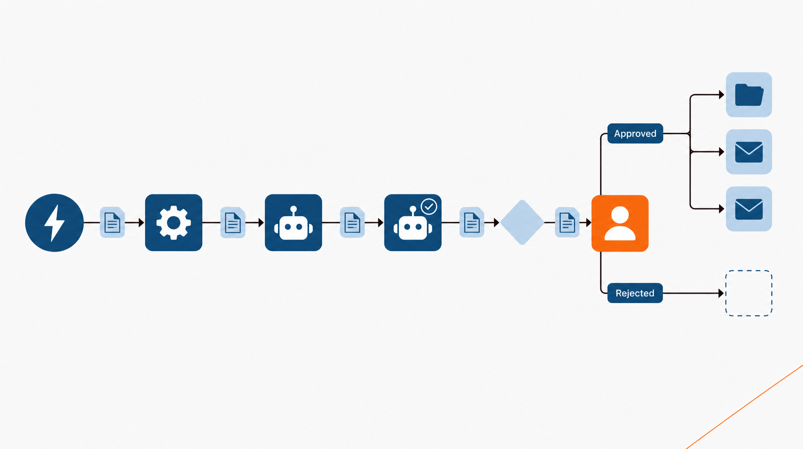

Module 5: Plan the workflow
Module 5: Plan a workflow
Estimated time: 9-10 minutes
Objective: Plan a workflow that connects two agents, actions, and a human decision, on the Workflow Planning Template.
Introduction to workflows
Remember, a workflow is a task that you’ve broken into steps and linked together. Those steps can be people, agents, or automations.
Every workflow has three kinds of step.
A trigger is what starts it: a file arriving in a folder, a weekly schedule, or a person pressing a button.
Steps. There are three kinds of step:
Actions do one fixed thing: get a file, create a document, send an email.
Agents do a specific job: draft the report, check the report.
Decisions choose an option: if something is true, choose one way. If not, choose another. Or ask a human to approve.
Dynamic content is information or files that gets handed on from one step to the next. The file from the trigger goes into the drafting agent. The draft goes into the checking agent, and so on.
Activity
Match the following:
Item | Match |
|---|---|
A new NSS response file lands in the Responses folder | Trigger |
The Programme Feedback Report agent drafts the report | Agent step |
If the checker found any mismatches, list them first | Condition |
The programme lead approves the report or sends it back | Human review |
The drafted report is passed into the checker’s message | Dynamic content |
The approved report is saved to the Reports folder | Action |
Example workflow
As a workflow, the NSS report has seven steps.
Trigger: a new response file is created in the NSS Responses folder.
Action: get the file’s content, and its modified date.
Agent step: the Programme Feedback Report agent drafts the report.
Agent step: another agent, a Programme Feedback Report Checker checks the draft against the response file, and returns its claims register.
Condition: if the checker flagged anything, those rows go first in the review message.
Human review: the programme lead reads the register and the report, approves or rejects, and writes the Recommendations section.
Actions, if approved: file the report and its claims register side by side, send the report to its circulation list, and send the accessibility section separately to the Disability and Inclusion Service. If rejected, nothing is filed or sent.

Where the person goes
Human judgement belongs at the start and the end, with AI doing the middle. In a workflow, the end slice has a precise place: after the check, before anything is filed or sent.
The human review step in Copilot Studio has four rules worth planning around:
- The request arrives by Outlook email.
- It can’t be sent to anyone outside the University’s tenant.
- It collects up to five kinds of input: text, yes or no, email, number, and date. Use these to capture the decision, and the part only a person can write, such as the recommendations.
- The first person to respond decides. With several people assigned, whoever answers first decides for all of them. Assign one named person.

In the admission cycle workflow, where should the analyst’s review sit?
Plan your workflow
Before you plan your own, here’s what the NSS workflow looks like on the template:
Field | NSS Feedback Report Cycle |
|---|---|
The job it does | Drafts, checks, and files each programme’s NSS report, once the programme lead approves it |
Trigger | A new response file created in the NSS Responses folder |
Where the output lands | The report and its claims register side by side in the Reports folder, the report to its circulation list, and the accessibility section to the Disability and Inclusion Service. Nothing lands until the programme lead approves |
# | Step | Type | Takes in | Passes on |
|---|---|---|---|---|
1 | A new response file lands in the Responses folder | Trigger | - | The file |
2 | Get the file’s content | Action | The file | The responses |
3 | Draft the report | Agent step: Programme Feedback Report agent | The responses | The draft |
4 | Check the draft cold | Agent step: Programme Feedback Report Checker | The draft and the responses | The claims register |
5 | Put any flagged rows first | Condition | The claims register | The review message |
6 | Approve or reject, and write Recommendations | Human review: the programme lead | The draft and the review message | The decision and the Recommendations |
7 | If approved, file and send. If rejected, nothing is filed or sent | Action | The decision, the report, and the register | The filed report and register, and the emails |
Your turn: Plan the workflow for your own agent on the Workflow Planning Template: what starts it, the steps in order, which agent does which step, where the person decides and what they decide, what happens when the check fails, and where the output lands. If it needs a second agent, plan that agent on the Agent Planning Template first.
Just as you planned your agent, plan your workflow before you build it. Download the Workflow Planning Template and work through it in order.

Start with what triggers it, such as a new NSS response file arriving in the Responses folder.
Then list the steps in order and say which agent does each one: the Programme Feedback Report agent drafts, and the checker reads the draft cold against the response file.
Mark the point where a person decides, and name that person and the decision they make: the programme lead reads the claims register, approves or rejects the report, and writes the Recommendations section.
Finish with where the output lands: the approved report and its register filed side by side, the report sent to its circulation list, and the accessibility section sent separately to where it needs to go.
Say what happens when the check fails, so a rejected report goes back and nothing is filed or sent.
